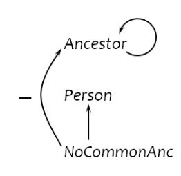
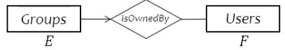
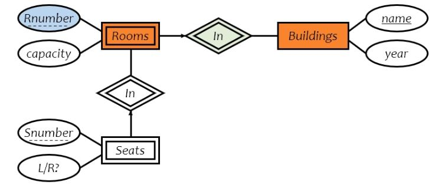
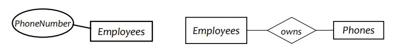
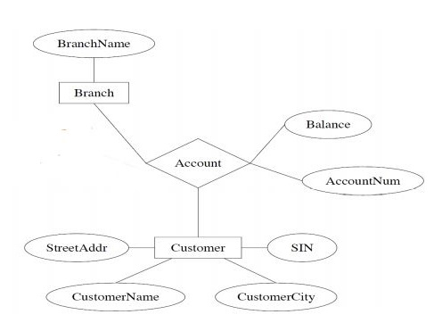
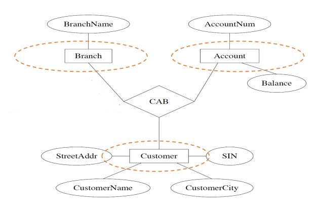
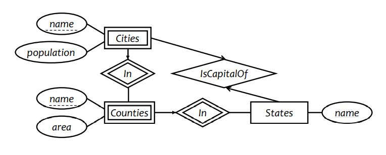

defn. database: an organized body of related information
defn. database management system (DBMS): a software system that facilitates the creation, maintenance and use of an electronic database
data, persistency, query, modification
earily effort: CODASYL standard:
programmers need to know how data is organized physically
worry about data/workload characteristics
relational revolution (Edgar F. Codd) (1970s)
simple model: data is stored in relations (tables)
declarative query language SQL
standard DBMS features:
logical data model; declarative queries and updates -> physical data independence
multi-user concurrent access; persistent storage of data; safety from system failures
performance
standard DBMS architecture:
+------------------+
| applications |
+----+-------+-----+
| ^
CRUD | | response
v |
+----+-------+-----+
| DBMS | +---------------------------+
+--------+---------+ |
^ |
v File system interface |
+--------+---------+ bypass|
| OS | |
+--------+---------+ |
^ |
v Storage system interface |
+--------+---------+ |
| Disk | <---------------------------+
+------------------+
relational data model
relations (tables)
each relation has attributes (columns)
each attribute has domain (range)
each relation has tuples (rows)
duplicates are not allowed
defn. schema (metadata):
specifies the logical structure of data
defined at setup time, rarely changes
defn. instance:
represents the data content
changes rapidly, but always conforms to the schema
defn. integrity constraints:
a set of rules that db instances should follow
types:
tuple-level
domain restrictions, eg. age cannot be negative...
relation-level
key constraints eg. uid should be unique in the User relation
functional dependencies
database-level
referential integrity - foreign keys eg. uid must refer to a row in users...
defn. a (candidate) key if a set of attributes K for a relation R if
in no instance of R will two different tuples agree on all attributes of K (ie K is an identifier)
no proper subset of K satisfies the above condition (ie K is minimal)
eg. in User(uid, name, age, pop)
uid is a key
age is not a key
(uid, name) is not a key (it is a superkey)
defn. a primary key is a designated candidate key in the schema declaration (we can have multiple keys)
eg.foreign keys ("pointer" to other rows)
|uid |name |age |pop |
|142 |bart |10 |0.9 |
|gid | name |
|dps |Deal Putting Society|
|uid |gid | # refer to above two tables
|142 |dps |
referential integrity: a tuple with non-null value for a foreign key that does not match the primary key value of a tuple in the referenced relation is not allowed
relational algebra
a language for querying relational data based on "operators"
core operator 1: selection
input: table R
notation: σpR
p is called a selection condition or predicate
goal: filter rows according to some criteria
output: same columns as R, but only rows of R that satisfy p
eg. users with popularity higher than 0.5: σpop>0.5User
predicate can include any column of R, constants, comparisons, boolean connectives
must be able to evaluate the condition over each single row of the input table eg. σpop≥every pop in User is not allowed
core operator 2: projection
input: table R
notation: πLR
L is a list of columns in R
goal: output chosen columns
output: "same rows" but only the columns in L
eg. get user ages: πageUser
duplicate output rows are removed
core operator 3: cross product
input: two tables R and S
notation: R×S
goal: pairs rows from two tables
output: for each row r in R and each s in S, output a row rs (concatenation of r and s)
column ordering is unimportant, so operator is commutative
derived operator 1: join (theta join)
input: two tables R and S
notation: R⋈pS:=σp(R×S)
goal: relate rows from two tables according to some criteria
output: for each row r in R and each row s in S, output a row rs if r and s satisfy p
eg. info about users, plus IDs of their groups: User⋈User.uid=Member.uidMember
CREATETABLEUser (uid DECIMAL(3,0), nameVARCHAR(30), age DECIMAL(2,0), pop DECIMAL(3,2));
CREATETABLEGroup (gid CHAR(10), nameVARCHAR(100));
CREATETABLEMember (uid DECIMAL (3,0), gid CHAR(10));
delete table
DROP TABLE table_name
eg. DROP User;
SFW statement
SELECT A1,...,An FROM R1,...,Rm WHERE cond;
also called select-project-join query
corresponds to πA1,...,An(σcond(R1×...×Rm))
not really equivalent to - sql has duplicate entries
semantics:
for t1 in R1:
...
for tm in Rm:
ifcond(t1, ..., tm):
compute and output A1,...,An as a row
eg.
-- all rows in the User tableSELECT * FROMUser;
-- name of users under 18SELECTnameFROMUserWHERE age<18;
-- where was Lisa born?-- select list can contain exprs and funcs eg. SUBSTR, ABS-- string literals (case sensitive) are enclosed in single quoteSELECT2021-age FROMUserWHEREname = 'Lisa';
eg. list IDs and names of groups with a user whose name contains "Simpson"
-- gid and name column names are not unique, so specify tableSELECT Group.gid, Group.name
FROMUser, Member, GroupWHERE User.uid = Member.uid -- join clauseAND Group.gid = Member.gid -- join clauseAND User.name LIKE'%Simpson%'; -- %: wildcard
eg. Names of all groups that Lisa and Ralph are both in
SELECT g.name
FROMUserAS u1, UserAS u2, MemberAS m1, MemberAS m2, GroupAS g -- can omit ASWHERE u1.name = 'Lisa'AND u2.name = 'Ralph'AND u1.uid = m1.uid AND u2.uid = m2.uid
AND m1.uid = g.gid AND m2.uid = g.gid; -- both people are in group with gid
many queries can be written using only selection, projection, and cross product (or join)
they can be written as general form: πL(σp(R1×...×Rm))
eg.πR.A,S.B(R⋈p1S)⋈p2(πT.Cσp3T)=πR.A,S.B,T.Cσp1∧p2∧p3(R×S×T) (combine selections, projections and products)
difference relational algebra vs. sql:
r.a. uses set semantics -> no duplicates in output
sql uses bag semantics by default -> allow duplicates
reason: efficiency
DISTINCT keyword can be used eg.
-- IDs of all pairs of users that belong to one groupSELECTDISTINCT m1.uid uid1, m2.uid uid2
FROMMember m1, Member m2
WHERE m1.gid = m2.gid AND m1.uid > m2.uid;
SQL set & bag operations
set: UNION, EXCEPT, INTERSECT
duplicates in input tables are first eliminated if any
duplicates in result are also eliminated (for union)
bag: UNION ALL, EXCEPT ALL, INTERSECT ALL
eg.
Bag1 Bag2
Fruit Fruit
----- -----
apple apple
apple orange
orange orange
-- add counts
> (SELECT * FROM Bag1) UNIONALL (SELECT * FROM Bag2);
Fruit
-----
apple
apple
orange
apple
orange
orange -- apple: 3 orange: 3-- proper subtraction on counts
> (SELECT * FROM Bag1) EXCEPTALL (SELECT * FROM Bag2);
Fruit
-----
apple -- 2-1=1-- take minimum of two counts
> (SELECT * FROM Bag1) INTERSECTALL (SELECT * FROM Bag2);
Fruit
-----
apple
orange
table subqueries
use query result as a table
eg. names of users who poked others more than others poked them
-- uid1 uid2------------------ user1 user2SELECTDISTINCTnameFROMUser,
(SELECT uid1 FROM Poke)
EXCEPTALL
(SELECT uid2 FROM Poke) AS T
WHERE User.uid = T.uid;
scalar subqueries
that returns a single row can be used as a value in WHERE, SELECT, etc
eg. users at the same age as Bart
SELECT * FROMUserWHERE age = (SELECT age FROMUserWHEREname = 'Bart');
if it returns more than 1 row -> error. can be avoided if name is key
if it returns no rows -> it is nil
IN subqueries
x IN (subquery)
checks x is in the result of subquery
eg. users at the same age as (some) Bart(s)
SELECT * FROMUserWHERE age IN (SELECT age FROMUserWHEREname = 'Bart');
EXISTS subqueries
EXISTS (subquery)
checks if the result of subquery is non-empty
eg. users at the same age as (some) Bart(s)
-- a correlated subquery: subquery that references tuple variables in surrounding queriesSELECT * FROMUser u WHEREEXISTS(SELECT * FROMUserWHEREname = 'Bart'AND age = u.age);
quantified subqueries
... WHERE x op ALL(subquery)
true iff for all t the result of subquery, x op t is true
... WHERE x op ANY(subquery)
true iff there exists t the result of subquery, x op t is true
eg.
-- most popular usersSELECT * FROMUserWHERE pop >= ALL(SELECT pop FROMUser);
SELECT * FROMUserWHERENOT (pop < ALL(SELECT pop FROMUser));
aggregates
standard SQL aggregate funcs: COUNT, SUM, AVG, MIN, MAX
eg.
-- number of users under 18 and their avg pop-- COUNT(*) -> number of rowsSELECTCOUNT(*), AVG(pop) FROMUserWHERE age < 18;
-- how many users are in some group?SELECTCOUNT(*) FROM (SELECTDISTINCT uid FROMMEMBER);
SELECTCOUNT(DISTINCT uid) FROMMEMBER;
grouping
SELECT ... FROM ... WHERE ... GROUP BY list_of_columns;
eg.
uid name age pop
----------------------
142 Bart 10 .9
857 Lisa 8 .7
123 Milhouse 10 .2
456 Ralph 8 .3
-- average popularity for each age group
> SELECT age, AVG(pop) FROMUserGROUPBY age;
age AVG(pop)
-------------
10 .55
8 .5
aggregate with no group by can be considered a single group.
if a query uses aggregation/group by, then every column referenced in SELECT must be either
aggregation
a group by column
this ensures any SELECT expr produces only one value for each group
having
SELECT ... FROM ... WHERE ... GROUP BY list_of_columns HAVING cond;
filter groups based on the group properties
eg.
-- list avg pop for each age group with more than 100 usersSELECT age, AVG(pop) FROMUserGROUPBY age HAVINGCOUNT(*) > 100;
SELECT T.age, T.apop
FROM (SELECT age, AVG(pop) apop, COUNT(*) gsize FROMUserGROUPBY age) T
WHERE T.gsize > 100;
aggregation and group provide more expressive power to relational algebra
subqueries do not
order by
SELECT [DISTINCT] FROM ... WHERE ... GROUP BY ... HAVING ...
ORDER BY output_column [ASC|DESC], ...;
eg.
-- all users sort them by pop (descending), then name (ascending)SELECT * FROMUserORDERBY pop DESC, name;
SELECT * FROMUserORDERBY4DESC, 2;
three-valued logic
SQL has TRUE=1, FALSE=0 and UNKNOWN=0.5
we have
x AND y = min(x, y)
x OR y = max(x, y)
NOT x = 1 - x
comparing a NULL with another values (>,>=,=,...) results in NULL
WHERE and HAVING clauses only select TRUE rows.
aggregate functions except COUNT(*) ignore NULLs.
eg.
-- if a row has NULL pop, following are not equivalentSELECTAVG(pop) FROMUser;
SELECTSUM(pop)/COUNT(*) FROMUser;
-- if a row has NULL pop, following are not equivalentSELECT * FROMUser;
SELECT * FROMUserWHERE pop=pop;
-- select users with NULL pop values-- this does not workSELECT * FROMUserWHERE pop=NULL;
-- works
(SELECT * FROMUser) EXCEPTALL (SELECT * FROMUserWHERE pop=pop);
SELECT * FROMUserWHERE pop ISNULL; -- IS NOT NULL for non-null
outerjoin
R ⟕ S for left outer join
includes rows R⋈S plus dangling R rows padded with NULLs
R ⟖ S for right outer join
includes rows R⋈S plus dangling S rows padded with NULLs
R ⟗ S for full outer join
includes both
eg.
Group
gid name uid gid
---------------------------- ---------
abc Book Club 142 dps
gov Student Govrnt 123 gov
dps Dead Putting Society 857 abc
nuk United Nuclear Workers 857 gov
789 foo
> SELECT * FROMGroupFULLOUTERJOINMemberON Group.gid = Member.gid;
gid name uid
--------------------------------
abc Book Club 857
gov Student Govrnt 123
gov Student Govrnt 857
dps Dead Putting Society 142
foo United Nuclear Workers NULL
foo NULL 789
> SELECT * FROMGroupLEFTOUTERJOINMemberON Group.gid = Member.gid;
gid name uid
--------------------------------
abc Book Club 857
gov Student Govrnt 123
gov Student Govrnt 857
dps Dead Putting Society 142
foo United Nuclear Workers NULL
-- similar for ... INNER JOIN ... ON ...;-- ... NATURAL JOIN ...;
-- delete everything from tableDELETEFROMMember;
-- User 789 leaves dpsDELETEFROMMemberWHERE uid = 789AND gid = 'dps';
-- Users under age 18 must leave unkDELETEFROMMemberWHERE uid in (
SELECT uid FROMUserWHERE age < 18
) AND gid = 'nuk';
update
eg.
-- User 142 changes name to BarneyUPDATEUserSETname = 'Barney'WHERE uid = 142;
-- change everyone's pop-- note subquery avg is always computed ahead using old table...UPDATEUserSET pop = (SELECTAVG(pop) FROMUser);
only checked when a tuple/attr is inserted/updated
reject if cond is FALSE
eg.
CREATETABLEUser (age INTEGERCHECK(age ISNULLOR age > 0), ...);
CREATETABLEMember (uid INTEGERNOTNULLCHECK(uid IN (SELECT uid FROMUser)), ...);
Week 3. May 25
triggers
a trigger is an event-condition-action (ECA) rule
when event occurs, test condition; if true, execute action
events:
UPDATE ON
INSERT ON
DELETE ON
UPDATE [OF col] ON table
timing:
AFTER
BEFORE
INSTEAD OF
granularity
FOR EACH ROW
FOR EACH STATEMENT
eg. if user with pop < 0.5 joins group, delete them
CREATETRIGGER PickySGroup
AFTERUPDATEOF pop ONUser-- eventREFERENCINGNEWROWAS newUser -- transition variableFOREACHROWWHEN (newUser.pop < 0.5) -- condAND (newUser.uid IN (SELECT uid FROMMemberWHERE gid = 'sgroup'))
DELETEFROMMember-- actionWHERE uid = newUser.uid AND gid = 'sgroup';
-- sameCREATETRIGGER PickySGroup2
AFTERUPDATEOF pop ONUserREFERENCINGNEWTABLEAS newUsers -- can only be used with AFTER triggerFOREACHSTATEMENTDELETEFROMMemberWHERE gid = 'sgroup'AND uid IN (SELECT uid FROM newUsers WHERE pop < 0.5);
availability for AFTER trigger:
event
row
statement
delete
old row; old table
old table
insert
new row; new table
new table
update
old row, new row; old table, new table
old table, new table
availability for BEFORE trigger
event
row
statement
delete
old row
insert
new row
update
old row, new row
statement- vs. row-level triggers
row-level triggers easier to implement - maintains less states
system issues
recursive firing of triggers
can get into infinite loop
interaction with constraints
when to check if a triggering event violates constrains?
DB2:
after a BEFORE trigger
before an AFTER trigger
be best avoided when alternatives exist
views
a view is like a virtual table
defined by a query which describes how to compute the view contents on the flow
stored by DBMS instead of view contents
can be used in queries like regular table
eg. reuse query sgroup
CREATEVIEW SGroup ASSELECT * FROMUserWHERE uid IN (SELECT uid FROMMemberWHERE gid = 'sgroup');
SELECTAVG(pop) FROM SGroup;
-- deletionDROPVIEW SGroup;
reasons to use views:
hide complexity from users
hide data from users
logical data independence
provide uniform interface for difference impl or sources
sql92 updateable views:
no join, no aggregation, no subqueries
eg. let the average pop be 0.5
CREATEVIEW AveragePop(pop) AS-- renamed columnSELECTAVG(pop) FROMUser;
CREATETRIGGER AdjustAveragePop
INSTEAD OFUPDATEON AveragePop -- don't do action on view, do it in base tableREFERENCINGOLDROWAS o, NEWROWAS n
FOREACHROWUPDATEUserSET pop = pop + (n.pop - o.pop);
UPDATE AveragePop SET pop = 0.5;
indexes
an index is an auxiliary persistent data structure
search tree, lookup date
an index on R.A can speed up accesses of the form
R.A = value
R.A > value (depends)
an index on (R.A1,...,R.An) can speed up
R.A1=v1∧...∧R.An=vn
(R.A1,...,R.An)>(v1,...,vn) (depends)
CREATE [UNIQUE] INDEX indexname ON table(col1, ...)
dbms typically create indexes for primary keys
recursive queries
sql2 had no recursion
sql3 introduces recursion
implemented in PostgresSQL
eg. find all ancestors of Bart
parent child
--------------
Homer Bart
Homer Lisa
Marge Bart
Marge Lisa
Abe Homer
Ape Abe
-- nonlinear recursionWITHRECURSIVE Ancestor(anc, desc) AS ((
-- base caseSELECTparent, childFROMParent
) UNION (
-- recursive relationSELECT a1.anc, a2.desc
FROM Ancestor a1, Ancestor a2
WHERE a1.desc = a2.enc
)
-- execution stops until a fixed point
)
SELECT anc FROM Ancestor WHEREdesc = 'Bart';
-- linear recursionWITHRECURSIVE Ancestor2(anc, desc) AS ((
SELECTparent, childFROMParent
) UNION (
SELECT anc, childFROM Ancestor2, ParentWHERE Ancestor2.desc = Parent.parent
)
)...
((mysql) should you put "desc" condition in base case?)
defn. for f:D→D, a fixed point of f is a value x such that f(x)=x.
to compute a fixed point of f, start with a seed x←x0, compute f(x)
if f(x)=x, stop; x is a fixed point
otherwise x←f(x), repeat
defn. a query q is just a function that maps an input table to an output table, so a fixed point of q is a table T such that q(T)=T.
to compute fixed point of q, start with empty table T←∅, eval q over T
if the result is same as T, stop; T is fixed point
otherwise T is the new result; repeat
linear vs. nonlinear recursion
linear is easier to implement
for linear, just keep joining newly generated Ancestor rows with Parent
for non-linear recursion, need to join newly generated Ancestor rows with all existing Ancestor rows
non-linear recursion may take fewer steps to converge, but takes more work
eg. Natural = 1,2,3,... 1 is odd; odd+1 is even; even+1 is odd/
WITHRECURSIVE Even(n) AS (
SELECT n FROMNaturalWHERE n = ANY(SELECT n+1FROM odd)
), RECURSIVE Odd(n) AS ((
SELECT n FROMNaturalWHERE n = 1
) UNION (
SELECT n FROMNaturalWHERE n = ANY(SELECT n+1FROM Even)
)
)...
semantics:
WITH RECURSIVE R1 AS Q1,..., RECURSIVE Rn AS Qn Q;
R1←∅,...,Rn←∅
eval Q1,...,Qn using current contents of R1,...,Rn
if Rinew=Ri for some i
R1←R1new,...,Rn←Rnnew
goto 2
compute Q using current contents of R1,...,Rn and output
if q is monotone, then starting from empty set produces the unique minimal fixed point
all these fixed points must contain this fixed point
this is the 'natural' answer
if q is non-monotone:
the fixed-point iteration may never converge
there could be multiple minimal fixed points (don't know to choose which)
should recursive queries contain negation?
construct a dependency graph
one node for each table defined in WITH
if R is defined in terms of S, then add directed edge from R to S
if R is not monotone with respect to S, then label the edge with '-'
if there are no cycles with '-' edge, then this is legal sql3 recursion
called stratified negation
eg. find pairs of persons with no common ancestors
WITHRECURSIVE Ancestor(anc, desc) AS
(SELECTparent, childFROMParent) UNION
(SELECT a1.anc, a2.desc
FROM Ancestor a1, Ancestor a2
WHERE a1.desc = a2.anc)),
Person(person) AS
((SELECTparentFROMParent) UNION
(SELECTchildFROMParent)),
NoCommonAnc(person1, person2) AS
((SELECT p1.person, p2.person
FROM Person p1, Person p2
WHERE p1.person <> p2.person)
EXCEPT
(SELECT a1.desc, a2.desc
FROM Ancestor a1, Ancestor a2
WHERE a1.anc = a2.anc))
SELECT * FROM NoCommonAnc;

evaluating stratified negation
the stratum of a node R is the max number of '-' edges on any path from R
Ancestor: 0
Person: 0
NoCommonAnc: 1
strategy:
compute tables lowest-stratum first
for each stratum, use fixed-point iteration on all nods in that stratum
using sql
cursor
open (a result table), get next, close
SQL/PSM
CREATE FUNCTION, FOR, DECLARE, ...
advantages:
more processing features for DBMS
more application logic can be pushed to data
cons:
sql is already too big
complicate optimization and make it impossible to guarantee safety
working with SQL through API
SQL/CLI (call-level interface) standard
prepared statements
embedded sql
pros:
be processed by a preprocessor prior to compilation -> catch sql-related error ahead
while in api, sql statements are interpreted at runtime
cons:
new host language code -> complicate debugging
support db features through an OO language
object mapping (sqlalchemy)
extend a general-purpose programming language with sql-like constructs
(linq)
Week 4. June 2
database design
understand real-world domain being modeled -> specify it using database design model
translate specs to date model of DBMS
create DBMS schema
entity-relationship model
entity: a 'thing'
entity set: a collection of things of same type, like a relation of tuples or a class of objects
rectangle
key is represented by underlining
relationship: an association among entities
relationship set: a set of relationships of same type (among same entity sets)
diamond
each relationship is uniquely identified by the entities it connects
attributes: properties of entities or relationships
ovals
eg. how to add info regarding isMemberOfSince?
multiplicity of relationships
many-many:
many-one: each entity in E is related to 0/1 entity in F; each entity in F is related to >0 in E (inplies (0,1))

one-to-one: one entity in E related to 0/1 in F; one in F related to 0/1 in E (two arrows pointing inward) (inplies (0,1))
general cardinality constraints
general cardinality constraints: lower and upper bounds on the number of relationships of a given relationship set in which a component entity may participate
eg.
each student can take 3-5 courses
each course can be taken by 6-100 students
weak entity sets
if entity E's existence depends on entity F
F is a dominant entity
E is a subordinate entity
weak entity sets contain subordinate entities
double rectangle
relationship sets are called supporting relationship sets drawn in double diamond
a weak entity set must have many-to-one/one-to-one relation to a distinct entity set
attributes of weak entity set only form key relative to a given dominant entity -> discriminator (dotted line)
primary key of a weak entity set = discriminator + primary key of dominant entities' entity set
string entity sets: contains no subordinate entities
eg. seats in rooms in building

to identify a room, the key is (Room.Rnumber, building.name)
ISA (extension)
represented as triangle pointing to the parent class.
COVER: subclasses must be disjoint in attributes
OVERLAP: subclasses can overlap in attributes
eg.
structured attributes (extension)
composite attributes (Address is composition of Street, City, ...)
multi-valued attributes:
double edges
aggregation: relationships can be viewed as high-level entities
eg. an emplyee can have multiple hobbies
attributes or entity sets?
eg. how to model employee's phones?

rules:
is it a separate object?
do we maintain info about it?
can several of them belong to a single entity?
does it make sense to delete such an object?
can it be missing from some of the entity set's entities?
can it be shared by different entities?
if any of them is true => suggests a new entity set
entity sets or relationships?
eg.
entity set:

n-nary relation:

binary relations:
we can always represent a relationship on n entity sets with n binary relationships
methodology:
recognize entity sets
recognize relationships sets and participating entity sets
recognize attributes of entity and relationship sets
define relationship types and existence dependencies
define general cardinality constraints, keys and discriminators
draw diagram
eg.
design a database representing cities, counties, and states
For states, record name and capital (city)
For counties, record name, area, and location (state)
For cities, record name, population, and location (county and state)
assume the following:
Names of states are unique
Names of counties are only unique within a state
Names of cities are only unique within a county
A city is always located in a single county
A county is always located in a single state

translate entity sets
entity set -> table
attributes -> columns
key attributes -> key columns
weak entity set -> table
key -> keys + borrowed keys from the dominant
translate relationship sets
relationship set -> table
key of connected entity sets -> columns
attributes of the relationship set (if any) -> columns
key -> determined by multiplicity
relationship set has *-one relation -> an extra key on the 'one' side
double diamonds (IN) -> nothing
the relationship is contained in the weak entity set's translation
eg.
translate ISA
method 1: entity-in-all-superclass
two tables
an entity is represented in the table of superclass
an extra table includes only the attributes directly attached to the corresponding entity set + the inherited key
pro: all data found in one table
con: data of subclasses are scattered
method 2: entity-in-most-specific
one table
table includes the attributes directly attached to the corresponding entity set + all inherited attributes
pro: all attributes found in one table -> no joining
con: data are scattered
method 3: all-entities-in-one-table
one table
find all possible subclasses' attributes (optionally plus a 'type' attr), and set them to null if they do not apply
use sql database constraints to limit 'type'
pro: everything in one table
con: lots of NULL's; too complex
eg.
represent aggregation
to represent relationship set involving aggregation of R, treat the aggregation like an entity set whose primary key is the primary key of the table for R
principle
KISS
avoid redundancy
capture essential constraints, but no unnecessary restrictions
use common sense
Week 5. June 8
eg. supplier & part
SuppliedItems(*Sno*, Sname, City, *Pno*, Pname, Price)
-- vs
Suppliers(*Sno*, Sname, City)
Parts(*Pno*, Pname)
Supplies(*Sno*, *Pno*, Price)
single-table schema suffer from
update anomalies (fix other rows if one changes)
insert anomalies
delete anomalies
likely increase in space requirements
designing good dbs
goals:
a method for evaluating schemas (detecting anomalies)
a method for transforming bad schemas to good ones
functional dependency
a functional dependency has the form X->Y where X and Y are sets of attributes in the relation. whenever two rows agree on all the attributes in X, they must agree on all attributes in Y.
project # determines project name and location: PNum -> PName, PLoc
allowances are always the same for the same number of hours at same location: PLoc, Hours -> Allowance
defn. a set of FDs Flogically implies a FD X->Y if X->Y holds in all instances of R that satisfy F.
defn.F+:={X→Y:F logically implies X→Y} is the closure of a FD set F.
axioms.(Armstrong's)
reflexivity: if Y⊆X, then X→Y (eg. SIn,EName -> EName)
augmentation: if S→Y, then XZ→YZ∀Z
transitivity: if X→Y,Y→Z, then X→Z
theorem.(decomposition) if X→YZ, then X→Y and X→Z.
theorem.(union) if X→Y,X→Z, then X→YZ.
eg. given
SIN, PNum -> Hours
SIN -> EName
PNum -> PName, PLoc
PLoc, Hours -> Allowance
show SIN, PNum -> Allowance.
1
SIN, PNum -> Hours
in F
2
PNum -> PName, PLoc
in F
3
PLoc, Hours -> Allowance
in F
4
SIN, PNum -> PNum
reflexivity
5
SIN, PNum -> PName, PLoc
transitivity, 4, 2
6
SIN, PNum -> PLoc
decomposition, 5
7
SIN, PNum -> PLoc, Hours
union, 6, 1
8
SIN, PNum -> Allowance
transitivity, 7, 3
defn. the closure of attributesZ in a relation (denoted Z+) with respect to a set of FDs is the set of all attributes {A1,A2,...} such that Z→A1,A2....
to compute Z+(Z,F):
start with closure = Z
if X->Y and X is already in the closure, then also add Y to the closure
repeat until no new attrs can be added
eg. we can show SIN, PNum -> Allowance by claiming {Allowance} is contained by Z+({SIN, Num}, F).
eg. to check K is a key of R, check its attribute closure is equal to the set of all keys.
decomposing relation
defn. let R be a relation schema, the collection {R1,...,Rn} of relations is a decomposition of R if R=R1∪...∪Rn.
'good' schema decomposition
lossless-join
able to construct the instance of the original table from the instances of the tables in the decomposition
a decomposition {R1,R2} is lossless iff the common attributes of R1 and R2 form a superkey for either schema, ie R1∩R2→R1 or R1∩R2→R2.
dependency-preserving
given schema R and set of FDs F, decomposition of R is dependency preserving if there is an equivalent set of FDs F′, none of which is interrelational (join) in the decomposition.
-- if there is non-clustering index on (firstname, pop)SELECTCOUNT(*) FROMUserWHERE pop > '0.8'AND firstname = '...';
non-clusted index contains all cols needed to answer the query without going to access base relation => reduce one io
guidelines for indices:
do not index unless performance increase outweights update overhead
attrs mentioned in WHERE clauses are candidates for index search keys
multi-attr search keys should be considered when
a WHERE clause contains several conditions or
it enables index-only plans
choose indices that benefit as many queries as possible
range queries benefit most from clustering (primary key)
Week 7. June 22
query processing
notation:
|u1 u2|
|u3 u4|
Memory:
- # memory blocks: M
| User | Member |
| u1 | m1 |
| u2 | m2 |
Disk:
- # rows for a table: |Users|
- # disk blocks for a table: B(Users) = |Users| / # rows per block
table scan
scan table R and proces the query
selection over R
projection of R without duplicate elimination
IOs: B(R)
trick for selection: stop early if it is a lookup by key
memory usage: 2 blocks
1 for input, 1 for buffer output
increase memory does not improve io
do not count the cost of writing result out
may be pipelined into another operator
nested-loop join: R⋈pS
for each block of R:
for each row r in R block:
for each block of S:
for each row s in S block:
ifp(r, s) istrue:
output rs
R is called outer table, S is called inner table
IO: B(R) + |R|*B(S)
memory requirement: 3 (1 for R, 1 for S, 1 for output)
blocked-based nested-loop join
for each block of R:
for each block of S:
for each r in R block:
for each s in S block:
ifp(r, s) istrue:
output rs
IO: B(R) + B(R)*B(S)
memory: 3
more improvements
stop early if the key of the inner table is being matched
stuff memory with as much of R as possible, stream S by, and join every S tuple with all R tuples in memory
IO: B(R)+⌈M−2B(R)⌉⋅B(S)≈B(R)⋅MB(S)
memory: M (as much as possible)
sorting
sort R, but R does not fit in memory. use external merge sort
phase 0: read M blocks of R at a time, sort them, and write out a level-0 run
phase 1: merge (M-1) level-0 runs at a time, and write out a level-1 run
sort R by A, sort S by B
r = R[0], s = S[0]
repeat:
if r.A > s.B:
s = next in S
elseif r.A < s.B:
r = next in R
else:
output all matching tuples
s = next in S
r = next in R
until R or S is exhausted
IO: sorting + O(B(R) + B(S)) (most cases)
worst: B(R)*B(S) everything joins
optimization of SMJ:
idea: combine join with last merge phase of merge sort
IO: 3*(B(R) + B(S))
if smj completes in two phases: memory: M>B(R)+B(S)
other sort-based algos:
union, difference, intersection (like SMJ)
eliminate duplicates
grouping & aggregation
produce 'partial' aggregate values. doe not always work eg sum(distinct), median()
hashing
hash join: R⋈R.A=S.BS
main idea:
partition R and S by hashing their join attrs and then consider corresponding partitions of R and S
if r.A and s.B get hashed to different partitions, they do not join
steps:
partition: partition R and S according to same hash function and join attrs
read in each partion of R, stream in the corresponding partition of S, join
typically build a hash table for the partition of R
IO:
phase 1: read B(R) + B(S) into memory to partition and write partitioned B(R) + B(S) to disk
phase 2: read B(R) + B(S) into memory to merge and join
IO: 3(B(R) + B(S))
memory requirement: M>min(B(R),B(S))+1
what if partition is too large for memory? read the partition back and partition it again. at most O(logMB(R)) times
hash join vs smj
hash join wins when two relations have very different sizes
hash join performance depends on quality of the hash
smj can be adapted for inequality join predicates
smj wins if R or S is already sorted
smj wins if the result needs to be ordred
other hash algorithms:
union, difference, intersection
duplicate elimination
grouping & aggregation - apply hash function to the group key
index-based algos
selection using index:
equality predicate: σA=v(R)
use isam, B+-tree, or hash index on R(A)
range predicate: σA>v(R)
use an ordered index (isam or B+-tree) on R(A)
indices other than those on R(A)
eg B+-tree index on R(A, B)
index nested-loop join: R⋈R.A=S.BS
for each block of R:
for each r in R block:
if r.A exists inS(B) s:
output rs
IO: B(R) + |R|*(index lookup)
better pick R to be smaller relation
memory: 3 blocks
zig-zag join using ordered indices: R⋈R.A=S.BS
idea: use the ordering provided by the indices on R(A) and S(B) to eliminate the sorting step of smj
index vs table scan:
index-only queries wins because no actual tuple retrivial needed
primary index clustered according to search key
one lookup leads to all result tuples
table scan wins in secondary, non-clusted index on R(A)
index method needs to follow pointer to actual tuple
index nested-loop join beats other joins if |R| is not too big
summary
selection
scan without index (linear search): O(B(R))
scan with index - selection condition must be on search-key of index
B+ index: O(log(B(R))
hash index: O(1)
projection
without duplicate elimination: O(B(R))
with duplicate elimination
sorting-based: O(B(R)⋅logMB(R))
hash-based: O(B(R)+t) where t is the result of the hashing phase
defn. an execution history over a set of transactions T1,...,Tn is an interleaving of the operations of T1,...,Tn where the operation ordering imposed by each transaction is preserved
assumptions:
transactions interact with each other only via reads and writes of objects
a db is a fixed set of independent objects
eg.T1={w1[x],w1[y],c1},T2={r2[x],r2[y],c2}, we can have history
Ha=w1[x]r2[x]w1[y]r2[y]c1c2 (interleaving)
Hb=w1[x]w1[y]c1r2[x]r2[y]c2 (serial)
Hc=w1[x]r2[x]r2[y]w1[y]c1c2
...
Ha is 'equivalent' to Hb
Hb is not equivalent to Hc because T2 reads different y in Hb and Hc
we can check equivalence also by:
defn. two operations conflict if
they belong to different transactions,
they operate on same object, and
at least one of the operations is a write.
defn. two histories are (conflict) equivalent if
they are over the same set of transactions, and
the ordering of each pair of conflicting operation is same in each history.
defn. a history H is (conflict) serializable if there exists some serial hostory H′ that is (conflict) equivalent to H.
eg. show Hc=w1[x]r2[x]r2[y]w1[y]c1c2 is not serializable.
T1=w1[x]w1[y]c1,T2=r2[x]r2[y]c2
we only have two serial excution to check:
Hb:T1 then T2
Hd:T2 then T1
conflicting pairs
Hb
Hc
Hd
w1[x],r2[x]
<
<
>
w1[y],r2[y]
<
>
>
choosing either we cannot preserve the order □
defn. a serialization graphSGH(V,E) for history H is
V={T:T is commited transaction in H}
E={Ti→Tj:∃oi∈Ti,oj∈Tj conflict and oi<oj}
theorem. a history is serializable iff its serialization graph is acyclic.
eg. show Ha=w1[x]r2[x]w1[y]r2[y]c1c2 is serializable.
note conflict: w1[x]<r2[x]
note conflict: w1[y]<r2[y]
graph has no cycles: □
T1 ----> T2
locking (for isolation)
rules:
if a transaction wants to read, it must first request a shared lock (S mode) on that object
if a transaction wants to modify, it must first request an exclusive lock (X mode) on that object
allows one X lock, multiple S lock
lock compatibility:
S
X
S
grant
no
X
no
no
eg. basic locking is not enough. given a non-serializable history:
x and y start from x=y=100. at end x=202, y=201. the interleaving breaks x=y.
two-phase locking:
all lock requests precede all unlock requests
having locking phase and unlocking phase
remaining problem of 2PL:
if T2 has read uncommitted data written by T1, if T1 aborts then T2 must abort.
cascading aborts is possible if other transaction have read data written by T2
if T2 commits before T1: schedule is not recoverable if system crashses right after T2 commits (we do not have enough info)
a transaction is deadlocked if it is blocked and will remain blocked until there is an intervention
locking-based concurrency control algos may cause deadlocks requiring aborting one of the transactions
strict 2PL:
only release X-lcoks at commit/abort time
a writer will block all other readers until writer commits or aborts
recovery
execution model:
to read/write X:
disk block containing X must be first brought into memory
X is read/written in memory
memory block containing X, if modified, must be flushed to disk eventually
failures:
system crashes right after T1 commits but not all effects of T1 were flushed
how to complete/redo T1 (durability)?
system crashses in the middle of T2 and partial effects of T2 were flushed
how to redo T2 (atomicity)
naive approach
T1:
read(A, a); a = a - 100;
write(A, a);
read(B, b); b = b + 100;
write(B, b);
commit;
force: all writes must be reflected on disk when a transaction commits
without force: not all writes are on disk when T1 commits. if system crashes after T1 commits, effects of T1 are lost
ensures durability
cons: losts of random writes hurt performance
no steal (atomicity): writes of a transaction can only be flushed at commit time
with steal: some writes are on disk before T commits. if system crashes before T1 commits, there is no way to undo the changes
ensures atomicity
cons: holding on to all dirty blocks requires lots of mem
logging:
database log is a sequence of log records recording all changes made to database, written to stable storage (eg disk) during normal operation
procedure:
when transaction Ti starts, write <Ti, start>
record values before and after each modification <Ti, X, oldval, newval>
Ti is committed when its commit log record is written <T, commit>
write-ahead logging: before X is modified on disk, log record pertaining X must be flushed
otherwise system may crash after X is modified on disk before its log record - no way to undo
steps:
U: used to track set of active transactions at crash
redo phase: scan forward to end of log
<T,start>: add T to U
<T,commit|abort>: remove T from U
<T,X,oldval,newval>: issue write(X, new)
undo phase: scan log backward
<T,X,oldval,newval>: write(X, old) and log this operation too ('repeating-history' paradigm)
when all effects are undone, log <T,abort>
checkpointing:
shortens the amount of log needed to be undone or redone
a checkpoint record contains a list of active transactions
steps:
write a begin_checkpoint record to log
collect checkpoint data into the stable storage
write end_checkpoint record to log
when recovering, check the last begin_checkpoint
Opt. July 27
distributed systems
data delivery alternatives:
delivery modes:
pull-only, push-only, hybrid
frequency:
periodic, conditional, ad-hoc or irregular
communication methods:
unicast, one-to-many
not all combinations make sense
distributed dbms promises:
transparent management of distributed, fragmented and replicated data
improved reliability/availability via distributed transactions
PROJ
Pno Pname Budget Loc
------------------------------------
P1 instrut 150000 montreal
P2 db dev 135000 NY
P3 cad/cam 250000 NY
-- projects with budgets < 200000
PROJ1
Pno Pname Budget Loc
------------------------------------
P1 instrut 150000 montreal
P2 db dev 135000 NY
-- projects with budgets >= 200000
PROJ2
Pno Pname Budget Loc
------------------------------------
P3 cad/cam 250000 NY
eg. vertical fragmentation:
-- project budget info
PROJ3
Pno Budget
----------------
P1 150000
P2 135000
P3 250000
-- project other info
Pno Pname Loc
------------------------
P1 instrut montreal
P2 db dev NY
P3 cad/cam NY
allocation alternatives:
partitioned (non-replicated): each fragment residers at one site
replicated
fully replicated: each fragment at each site
partially replicated: each fragment at some of the sites
if update queriesread-only queries≫1, then replication is advantageous, otherwise problems.
query processing
+ calculus query on
| distributed relations
| v
| +-------------------------+
| |query normalization | +-----------------+
control| |analysis, simplification | <- |global schema |
site | +-------------------------+ +-----------------+
| v
| algebraic query on
| distributed relations
| v
| +-------------------------+ +------------------+
| |data localization | <- |fragment schema |
| +-------------------------+ +------------------+
| v
| fragment query
| v
| +-------------------------+ +------------------+
+ |global optimization | <- |stats on fragments|
+-------------------------+ +------------------+
v
optimized fragment query
+ with communication operations
| v
local| +-------------------------+ +------------------+
sites| |local optimization | <- |local schema |
| +-------------------------+ +------------------+
| v
+ optimized local queries
data localization:
input: algebraic query on distributed relations
determine which fragments are involved
localization program: substitute for each global query its materialization program and optimize
eg.Proj⋈Emp⇒(Proj1⋈Emp)∪(Proj2⋈Emp) (parellel).
global query optimization:
input: fragment query
find the best (not necessarily optimal) global schedule:
minimize a cost function
distributed join processing
bushy vs. linear trees
which relation to ship where
ship-whole vs. ship-as-needed
decide on the use of semijoins
semijoin saves on communication at expense of more local processing
joins methods
nested loop vs ordered joins
cost-based optimization:
solution space: set of equivalent algebra expression trees
cost function (of time):
io cost + cpu cost + communication cost
they might have different weights in different environments
can also maximize throughput
search algos: how to move inside the solution space?
optimize utilization of the resources => increase system throughput
response time:
do as many things as possible in parallel
longest execution path dominates response time
may increase total time because of increased total activity
concurrency control
enforcing isolation by maintaining serializable histories
both local histories and global histories are involved
multiple techniques:
2PL, timestamping, optimistic
for global serializability, two conditions are necessary:
each local history is serializable
two conflicting operations are in the same relative order in all of local histories where they appear together
distributed locking:
centralized 2PL: single lock table managed by single scheduler at a central site
distributed 2PL: each site has a scheduler that manages lock table for local data
distributed reliability:
problem: different sites do different things - how to synchronize?
commit protocols:
execution commit command for distributed transactions
issue: how to ensure atomicity and durability in distributed setting?
need to get agreement among sites about fate of each transaction
two-phase commit:
phase 1: coordinator gets participants ready to write results into db
phase 2: everyone writes results into db
coordinator: process at the site where transaction originates and which controls execution
participant: process at other sites which are involved in the transaction
global commit rule:
coordinator aborts transaction iff at least one participant votes to abort it
coordinator commits a transaction iff all participants vote to commit it
data replication
pros:
system availability: avoid single point sof failure
performance: localization
scalability: in numbers and geographic area
application requirements
cons:
replication transparency
consistency issues: updates
one-copy equivalence: effect of transactions performed by clients on replicated objects should be the same as if they had been performed on single set of objects.
write(x)
v
+---+
| x | logical data
+---+ item
+------------+------------+
wtite(x1) write(x2) write(x3)
v v v
+--+ +--+ +--+
|x1| |x2| |x3| physical items
+--+ +--+ +--+ (replicas)
consistency models: how to reason about consistency of the 'global execution state'?
mutual consistency: how to keep values of physical copies of a logical data item synchronized?
strong consistency:
all copies updated within the context of update transaction
when update transaction completes, all copies have same value
typically done via 2PC
weak consistency:
eventual consistency: copies are not identical when update completes, but eventually converge to same value
versions: time-bounds, values-bounds, drifts
transactional consistency: how to guarantee global execution history over replicated data is serializable?
one-copy serializability (1SR): effects of transactions performed by clients on replicated objects should be same as if they had been performed one at-a-time on single set of objects
to make it efficient, steps need to be executed incrementally
on-line analytical processing (OLAP)
OLAP is particular type of decision support:
data modeled as multidimensional array
queries are usually ad hoc
queries select and aggregate cells of array
OLAP systems categories:
special-purpose OLAL systems:
store data as multidimensional array (AOLAP)
provide OLAP-specific query language
relational databases:
store data in relations (ROLAP)
SQL queries
OLAP queries:
typically aggregate over one or more dimensions
eg. total sales; total sales this year for each product category
OLAP is tool for ad hoc data exploration/visualization
ad hoc queries tend to be iterative
desirable to express queries using operations over previous result
a data cube extends a multidimensional array of data to include all possible aggregated totals
eg.
Location
lid store city province country
-------------------------------------------------
A Weber Waterloo ON CA
B F-H Kitchener ON CA
C Park Kitchener ON CA
Product
pid pname category price
---------------------------------------
1 Bolt Hardware .1
2 Nut Hardware .05
3 Wrench Tools 1.99
Sales
--------------------------------------
lid pid tid sales
A 1 1 11
A 2 1 12
B 1 1 14
...
Time
tid date week month quarter year
----------------------------------------------------
virtual relation
operations:
generating the data cube:
SUM(sales) GROUP BY location, product, time; -- raw cells
SUM(sales) GROUP BY location, time;
SUM(sales) GROUP BY product, time;
SUM(sales) GROUP BY product, location;
SUM(sales) GROUP BY product;
SUM(sales) GROUP BY location;
SUM(sales) GROUP BY time;
SUM(sales);
-- sql:1999 cube operator groups by all combinationsSELECT lid, pid, tid, SUM(sales) FROM Sales GROUPBYCUBE(lid, pid, tid);
-- materialized view-- useful for any query that-- 1. rolls-up the Location dimension to at least City-- 2. rolls-up the Time dimension to at least QuarterCREATEVIEW ByCityQuarter(city, pid, quarter, sales) ASSELECT city, pid, QUARTER(tid), SUM(sales)
FROM Sales S, Location L
WHERE S.lid = L.lid
GROUPBY city, pid, QUARTER(tid);
issues related to using materialized views:
which views to materialize (view selection)
which views are useful to answer query (view matching)
which indices to build on the views
how to refresh data in view:
synchronous incremental maintenance
asynchronous incremental maintenance
no synchronization: periodic recreation
these are very same issues that apply to entire data warehouse, relative to data in the operational databases
data mining
data mining is process of semi-automatically analyzing large databases to find useful patterns
prediction based on past history
eg if a credit card applicant poses good credit risk based on some attrs and past history
prediction mechanisms:
classification: given new item whose class is unknown, predict its class
regression formulas: given set of mappings for an unknown function, predict the function result for new parameters
descriptive patterns:
associations: find books that are often bought by 'similar' customers
may be used as first step in detecting causation
clusters: eg typhoid cases were clustered in an area surrounding a contaminated well
classification rules:
classification rules help assign new objects to classes
eg given a new automobile insurance applicant, should they be classified as low risk, medium risk or high risk?
rules are not necessarily exact
rules can be shown compactly as decision trees
construction of decision trees:
training set: data sample in which classification is already known
greedy top down generation of decision trees
each internal node of tree partitions data into groups based on a partitioning attribute and a partitioning condition for node
leaf node either
all (most) of items at node belong to same class
all attrs have been considered, and no further partitioning is possible
other types of classifiers:
neural net classifiers
bayesian classifiers
bayes theorem: p(cj∣d)=p(d)p(d∣cj)p(cj) where
p(cj∣d): probability of instance d being in class cj
p(d∣cj): probability of generating instance d given class cj
p(cj): probability of occurrence of class cj
p(d): probability of occurrence of instance d
requires computation of p(d∣cj), precomputation of p(cj)
p(d) ignored since it is same for all classes
naive bayesian classifiers: assume attrs have independent distributions, and estimate p(d∣cj)=∏ip(di∣cj)
each p(di∣cj) estimated from histogram on di values for each class cj
histogram computed from training instances
histograms on multiple attrs are more expensive to compute and store
association rules:
eg. someone who buys bread is likely to buy milk: bread => milk
an association rule must have associated population which consists of set of instances
eg each sale is an instance; set of all sales is the population
rules have associated support: measure of what fraction of population satisfies both antecedent and consequent of the rule
eg. only .001% of purchases include milk and screwdrivers, then support for the rule milk => screwdrivers is low
rules have confidence: measure of how often consequent is true if antecedent is true
rule bread => milk has confidence of 80% if 80% of purchases including bread also include milk
clustering:
intuitively, finding clusters of point sin given data such that similar points lie in same cluster
formalized using several distance metrics:
group points into k sets such that average distance of points from the centroid (average of coordinates) of their assigned group is minimal
minimize average distance between every pair of points in a cluster
hierarchical clustering:
eg: biological classification
agglomerative algos: build small clusters, then cluster small clusters into bigger clusters
divisive clustering algos: start with all items in single cluster, repeatedly break clusters into smaller ones